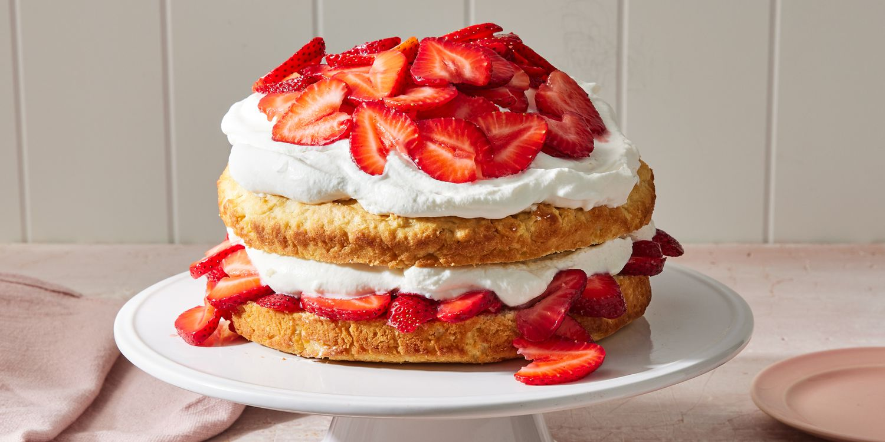

Ingredients
- 6 tablespoons unsalted butter, cut into pieces and softened, plus more for brushing
- 1 cup unbleached all-purpose flour, plus more for dusting
- ½ cup plus 2 tablespoons granulated sugar, divided
- 1 teaspoon baking powder
- ½ teaspoon plus a pinch of kosher salt (we use Diamond Crystal)
- 1 large egg, room temperature
- ½ cup whole or 2 percent milk, room temperature
- 2 cups sliced fresh strawberries
- 1 teaspoon fresh lemon juice
- 1 cup heavy cream
- 1 tablespoon confectioners' sugar
Directions
- Preheat oven to 325°F. Brush 8 cups of a standard muffin tin or muffin-top pan (such as Wilton) with butter.
- Dust with flour, tapping out excess.
- Whisk together 1/2 cup granulated sugar, flour, baking powder, and 1/2 teaspoon salt.
- Add butter; using your fingers, blend into dry mixture until it has the texture of coarse crumbs.
- Make a well in center.
- Add egg and whisk, then add milk and whisk to combine and form a batter (there may be little flecks of butter).
- Divide evenly between prepared cups, about 1/4 cup each.
- Bake, rotating halfway through, until lightly browned around edges and tops spring back when gently pressed, about 20 minutes in standard tin, 15 minutes in muffin-top pan.
- Let cool in pan 10 minutes, then turn out onto a wire rack and let cool completely.
- Toss together strawberries, remaining 2 tablespoons granulated sugar, pinch of salt, and lemon juice.
- Let stand until berries begin to release their juices, at least 15 minutes.
- Whisk cream with confectioners' sugar to soft peaks.
- To serve, split cakes horizontally and fill with berries and cream.
| Number |
Name |
State |
| 1 |
Eiz |
Kelantan |